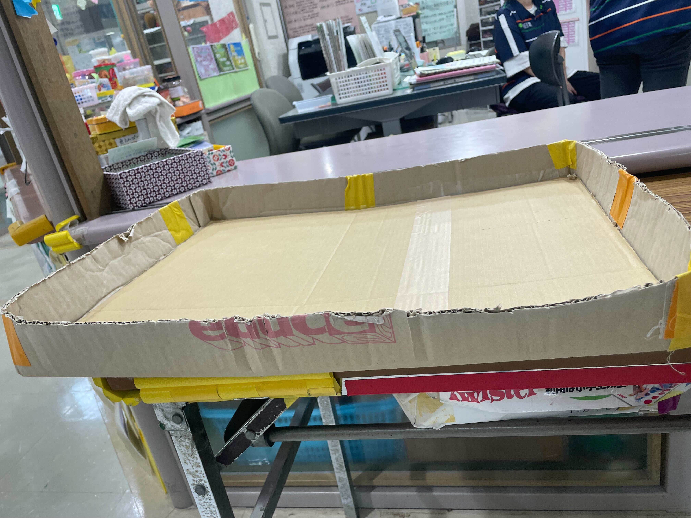

プロジェクトノート
6/7 2025
Doyolab
今cocoruで使っているもの
スケッチ
データ作成プロセス
- 大枠はMakerboxで作る（SVGで保存）
- Adobe illustratorに取り込む
- 通気性を良くするための穴を配置するために図形ツールを使って四角形を描画する。この時に何ミリか余白を設ける
（バラバラにならないために） - 穴をデザインしてスウォッチに取り込む。初期型で言えばトランプ柄
- 3で作っておいた四角形の塗りつぶしをデザインしたスウォッチの柄にする。
- スウォッチ柄にした塗りつぶしを選択し、オブジェクト>分割・拡張>塗りつぶしを選択する ※スウォッチのままRubyに入れると単なる塗りつぶしとして認識されてしまう…
- 細かい調整をしてデータ自体は完成。